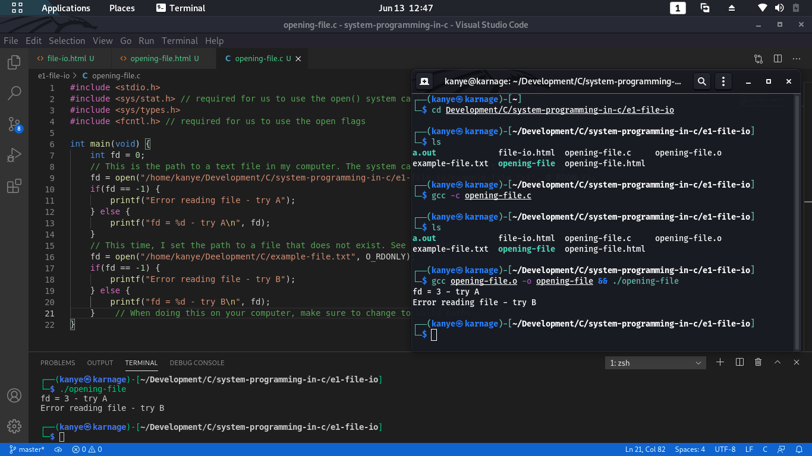

Opening Files
But before we open the file, it must be opened using an open() or create() system call.
Once we are done with a file, it is the standard to always close it using the close() system call.
The open() call
With this, a file is opened and a file descriptoris obtained with the open() system call.
The open system call takes an argument name which is path of the file and maps the file descriptorto it, then returns that file descriptor on success. The file position is then set to 0 and the file is opened for access accordint to the flags given by the next argument flag
Flag Argument
The flag argument determines how the file will be opened - readonly, writeonly, etc.This argument must be one of the following:
- O_RDONLY for read-only
- O_WRONLY for write-only
- O_RDWR for read-write
Let us look at my simple example. Refer to e1-file-io/opening-file.c for the code.
You notice here that I set the path first to a valid file in this directory which produced a file descriptor of 3 for that file.

The flags argument can be multiple, separated by | (bitwise OR) changing the behaviour of the open request.
Other important flags include:
- O_APPEND: Opens the file in append mode.
- O_CREAT: Creates the file if it does not exist
- Contributors to this repo can add more flags when they can.